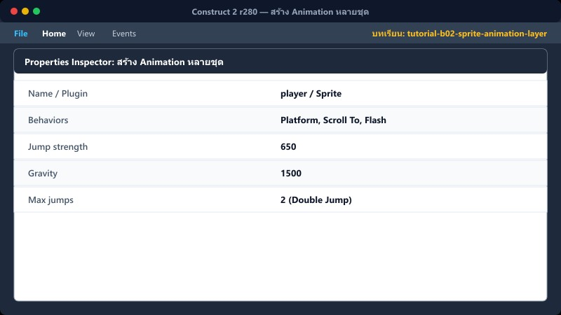
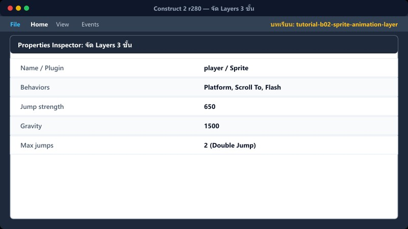
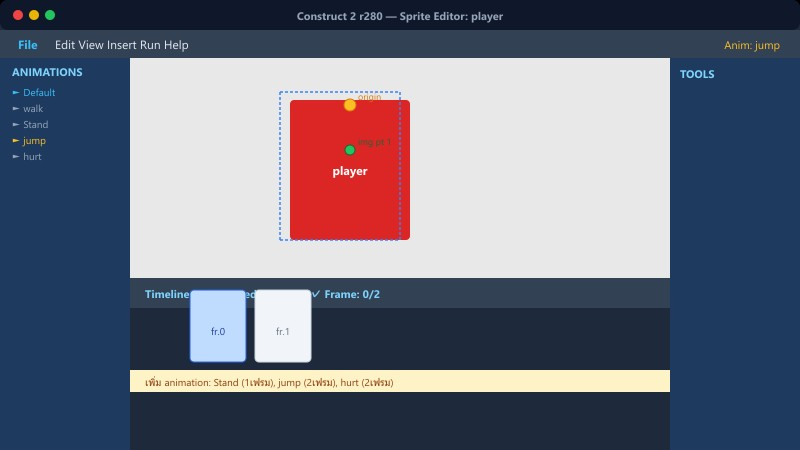
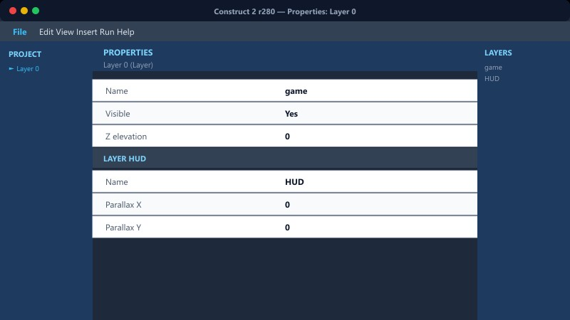

1 สร้าง Sprite
1. ดับเบิลคลิก พื้นที่ว่างใน Layout view
2. จะมีหน้าต่าง Insert New Object ขึ้นมา ให้ดับเบิลคลิก Sprite
3. เมาส์จะเปลี่ยนเป็นเป้ากากบาท ให้คลิกซ้ายลงบนพื้นที่ว่าง 1 ครั้ง
4. หน้าต่าง Edit image จะเปิดขึ้นมา ให้คลิกไอคอนโฟลเดอร์ Load an image from a file ด้านซ้ายบน แล้วเลือกรูป PNG
5. ปิดหน้าต่าง Edit image
6. ไปที่หน้าต่าง Properties ด้านซ้าย ตั้งชื่อ Name เป็น player
| Properties: Sprite |
|---|
| Name | player |
| Initial visibility | Visible |
📍 ที่ไหนใน C2: Layout → ดับเบิลคลิกพื้นว่าง → Insert → Sprite
2 สร้าง Animation หลายชุด

1. ดับเบิลคลิกที่ Sprite ใน Layout เพื่อเปิดหน้า Edit image
2. มองไปที่หน้าต่าง Animations ด้านขวา (หรือขวาล่าง)
3. คลิกขวา ที่ Animation 1 → เลือก Rename ตั้งชื่อเป็น walk
4. คลิกขวา พื้นที่ว่างในช่อง Animations → Add animation ตั้งชื่อเป็น Stand
5. ดึงรูปเข้าเฟรม โดยคลิกขวาที่แถบ Animation frames ด้านล่าง → Import frames → From sprite strip... หรือ From files...
6. คลิกที่ชื่อ Animation แล้วตั้งค่าที่ Properties: ตั้งค่า Speed = 8-12, และ Loop = Yes
| Animation Properties |
|---|
| Speed | 10 |
| Loop | Yes |
📍 ที่ไหนใน C2: ดับเบิลคลิก Sprite → Animations panel
3 จัด Layers 3 ชั้น

1. มองหาแท็บ Layers (ปกติอยู่มุมขวาล่างของหน้าจอ)
2. คลิกไอคอน + (Add layer) เพื่อเพิ่มเลเยอร์ ให้มีทั้งหมด 3 ชั้น
3. คลิกขวา ที่แต่ละเลเยอร์ เลือก Rename และตั้งชื่อจากล่างขึ้นบนตามนี้:
- bg (ฉากหลัง, ล่างสุด)
- game (ตัวละคร/วัตถุ, ชั้นกลาง)
- HUD (แสดงผล UI เช่น หลอดเลือด, คะแนน, บนสุด)
4. การตั้งค่า HUD ให้ลอยติดหน้าจอเสมอ: คลิกเลือกเลเยอร์ HUD ไปที่หน้าต่าง Properties แล้วเปลี่ยนค่า Parallax เป็น 0, 0
| Layer Properties (HUD) |
|---|
| Name | HUD |
| Parallax | 0, 0 |
📍 ที่ไหนใน C2: แถบ Layers (มักอยู่ทางขวาล่างของหน้าจอ)
4 แก้ Collision Polygon (กรอบชน)

1. ดับเบิลคลิก Sprite เพื่อเปิดหน้า Edit image
2. คลิกที่ไอคอนรูปกล่องหลายเหลี่ยม Set collision polygon ด้านซ้ายมือ
3. ลากจุดสีแดงตามมุมภาพให้พอดีกับรูปร่างของตัวละคร
4. สามารถ คลิกขวา บนเส้นขอบสีแดง → เลือก Add point เพื่อเพิ่มจุดมุม หรือกดลบจุดที่ไม่ต้องการได้
ถ้ากรอบ Collision ใหญ่กว่ารูป จะทำให้ตัวละครชนกำแพงที่มองไม่เห็น หรือเดินลอยเหนือพื้น
📍 ที่ไหนใน C2: Image editor (ดับเบิลคลิก Sprite) → เครื่องมือ Set collision polygon
⚠️ ข้อผิดพลาดที่พบบ่อย

- ชื่อ Animation: โปรแกรมแยกตัวพิมพ์เล็ก/พิมพ์ใหญ่ (Case-sensitive) เช่น
walk ไม่เหมือนกับ Walk ต้องเรียกให้ถูกต้องเวลาเขียนโค้ด
- ลืมตั้ง Parallax ที่ HUD Layer: ทำให้เวลาเดิน UI จะหลุดออกนอกจอ
- วาง object ผิด Layer: ฉากไปบังตัวละคร หรือตัวละครไปบัง UI